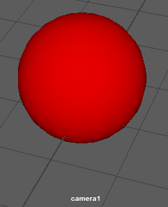

默认情况下，Maya 有四个摄影机，可供您在面板中查看场景：透视摄影机和三个与默认场景视图相关的正交摄影机（侧、顶、前）。在为对象进行建模、设置动画、着色和应用纹理时，可通过这些摄影机（面板）进行观察。若要在这些摄影机之间进行切换，请打开“面板”(Panels)菜单，并从“透视”(Perspective)或“正交”(Orthographic)子菜单中选择一个摄影机。
您还可以使用不同的方式创建自己的摄影机来查看场景。有关可用摄影机种类的描述，请参见 Maya 摄影机类型。
创建新摄影机
- 选择“创建 > 摄影机”(Create > Cameras) > camera type >
 （其中 camera type 是所需的摄影机类型）。
（其中 camera type 是所需的摄影机类型）。
将显示该摄影机类型的创建摄影机选项。
注： 如果之前已设置此摄影机类型的选项，则只需选择摄影机类型，而无需打开选项；不必每次都设置其选项。 - 设置摄影机选项，然后单击“创建”(Create)。
通过新摄影机查看场景
- 在视口中选择该摄影机。
- 在视图面板菜单中，选择。
摄影机名称将显示在视口底部。